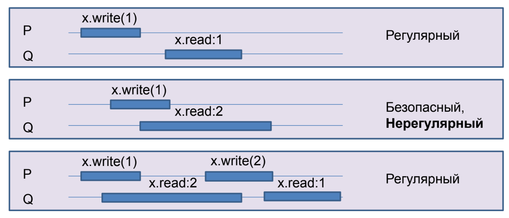
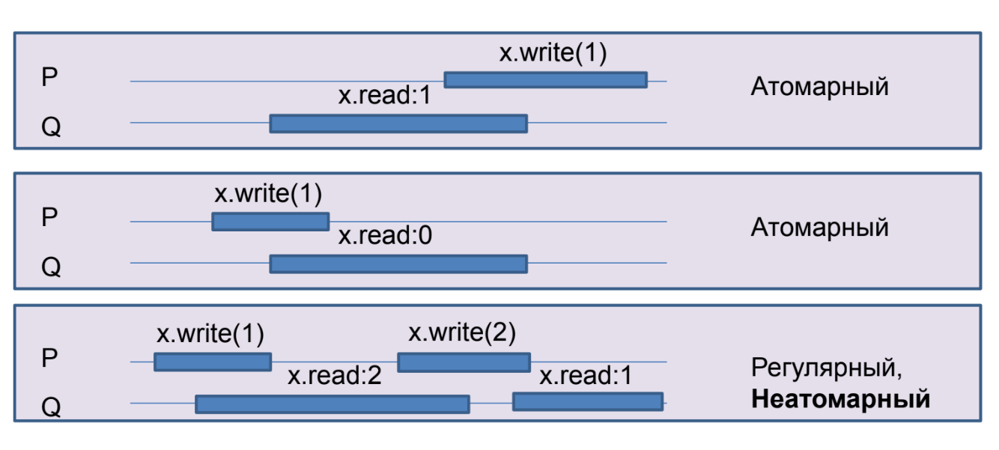
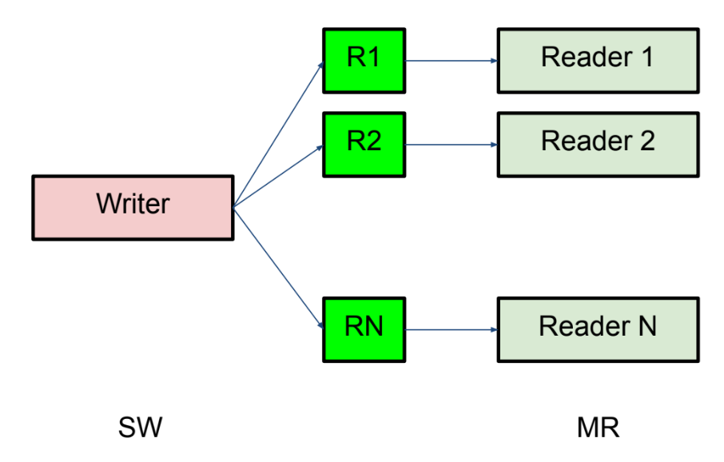
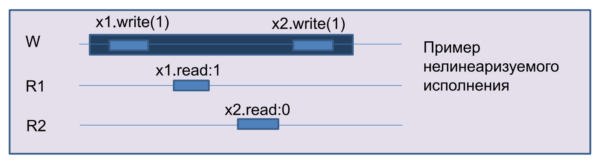
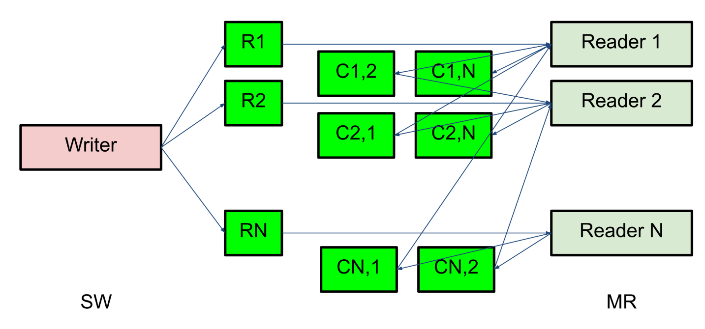
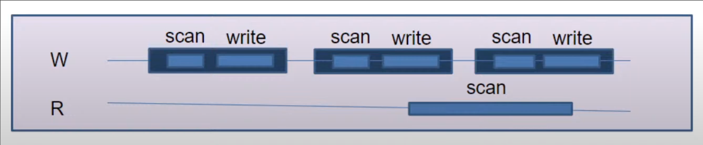

Лекция 4.1. Алгоритмы без блокировок: Построения на регистрах
Мы не можем требовать, чтобы алгоритм не использовал блокировку, ибо это нечто непонятное. Вместо этого мы будем использовать одно из безусловных условий прогресса
Отсутствие помех (obstruction-freedom)
Если несколько потоков пытаются выполнить операцию, то любой из них должен выполнить её за конечное время, если все другие потоки остановить в любом месте.
Это условие слабое.
Отсутствие блокировок (lock-freedom)
Если несколько потоков пытаются выполнить операцию, то хотя бы один из них должен выполнить её за конечное время (независимо от действия/бездействия других потоков).
На практике используется именно lock-freedom.
Для hard realtime систем это условие недостаточно, так как нет условия, что все потоки вовремя все сделают.
Отсутствие ожидания (wait-freedom)
Если какой-то поток пытается выполнить операцию, то он выполнит ее за конечное время независимо от действия или бездействия других потоков.
С блокировкой объект не может быть obstruction-free.
Регистр
Последовательная спецификация:
class Register:
int r
def write(x):
r = x
def read():
return r
Физические регистры не атомарны
- Без ожидания
- Один читатель
- Один писатель
- Чтение и запись одновременно приводит к непредсказуемым результатам
- Безопасны: после завершения записи будет прочитано последнее записанное значение
Построим более полезный регистр. Это сугубо теоретическое упражнение, но идеи из него применимы на практике.
Небезопасный регистр бесполезен.
Регулярные регистры
При чтении выдает либо последнее записанное значение, либо одно из тех значений, что сейчас пишутся.

Атомарные регистры
Исполнение линеаризуемо.

Регулярный SRSW булев регистр
Дано: безопасный SRSW булев регистр
safe shared boolean r
threadlocal boolean last
def write(x):
if x != last:
last = x
r = x
def read():
return r
Так как у нас только один писатель и регистр булев, то мы просто не перезаписываем последнее записанное значение.
Регулярный SRSW регистр, M значений
Дано: Регулярный SRSW булев регистр
Запоминаем M значений в унарном коде с помощью M регистров. Тогда индекс первого нуля — значение. Пишем справа налево, а читаем слева направо.
regular shared boolean[M] r
def write(x): # справа налево
r[x] = 0
for i = x - 1 downto 0: r[i] = 1
def read(): # слева направо
for i = 0 to M - 1:
if r[i] == 0:
return i
Атомарный SRSW регистр с версиями
Дано: Регулярный SRSW регистр на M значений
regular shared (int x, int v) r
threadlocal (int x, int v) lastRead
threadlocal int lastWriteV
def write(x):
lastWriteV++
r = (x, lastWriteV)
def read():
cur = r
if cur.v > lastRead.v
lastRead = cur
return lastRead.x
В теории версии растут неограниченно, поэтому проблема.
Теорема: (вне курса) Не существует алгоритма построения атомарного регистра без ожидания, которые использует конечное число регулярных регистров конечного размера так, чтобы их писал только писатель, а читал только читатель.
Вывод: нужна обратная связь от читателя к писателю. Мы не будем это рассматривать.
Атомарный MRSW регистр
Дано: атомарный SRSW регистр M значений
Идея: заведет по регистру для каждого читателя и будем писать в них.

Очень жаль, идея не работает:

Заведём ещё \(n(n-1)\) регистров для общения между читателями.
- Каждый читатель выбирает более позднее значение из записанного писателем и из прочитанных значений других читателей.
- После этого читатель записывает свое прочитанное значение и версию для всех остальных читателей.

Атомарный MRMW регистр с версиями

Писатели будут между собой по алгоритму булочника выбирать билетик. Билетиком штампуют записанное значение, читатели выбирают самое позднее.
Атомарный снимок состояния N регистров
Последовательная спецификация:
class Snapshot:
shared int r[N]
def update(i, x):
r[i] = x
def scan():
return copy()
private def copy():
res = new int[N]
for i = 0..N-1: res[i] = r[i]
return res
shared (int x, int v) r[N]
# wait-free
def update(i, x):
sr[i] = (x, r[i].v + 1)
# lock-free
def scan():
old = copy()
loop:
cur = copy()
if forall i: cur[i].v == old[i].v:
return cur.x
old = cur
При большом числе update scan виснет. Поэтому пусть каждый регистр хранит копию снимка и при обновлении будем делать scan, чтобы помочь другим операциям.
shared (int x, int v, int[N] s) r[N]
def update(i, x):
s = scan()
r[i] = (x, r[i].v + 1, s)
# wait-free, O(N^2)
def scan():
old = copy()
boolean updated[N]
loop:
cur = copy()
for i = 0..N-1:
if cur[i].v != old[i].v:
if updated[i]: return cur[i].s
else:
update[i] = true
old = cur
continue loop
return cur.x
Лемма: Если значение изменилось второй раз, то хранящаяся там копия снимка s была получена вложенной операцией scan.
